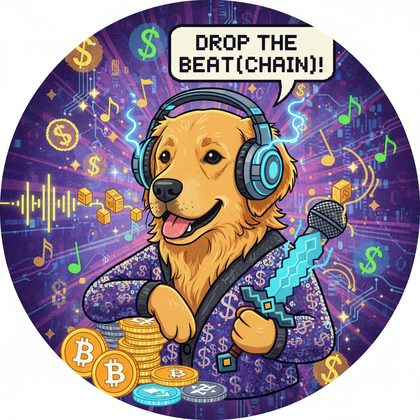
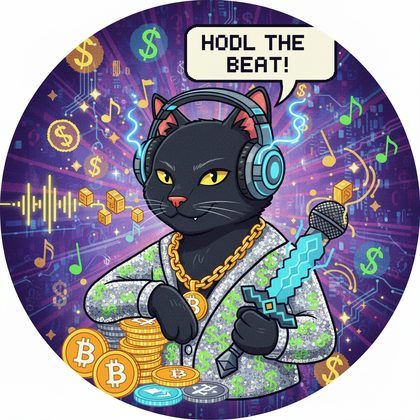
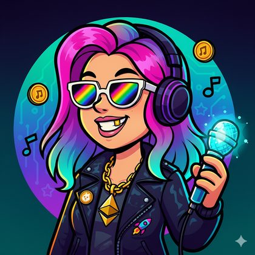
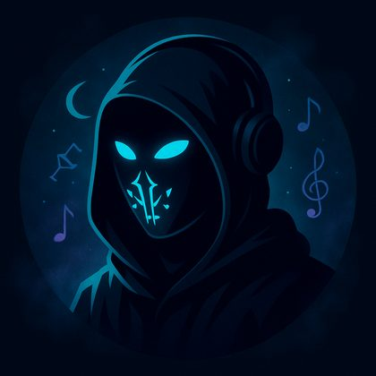

🏛️ THE ANCESTOR'S ROOM · EST. NEW DELHI 2025
OSO P.I.T. — The Ancestor, Preserved
the original code · the prize · the artwork · the soul
the ancestor's own artwork — the visual orchestra pit, where musicians queue to perform · from the original 2025 build
🏆 Most Creative Use of ENS
ETHGlobal New Delhi 2025 · Sep 26–28
In September 2025, at ETHGlobal New Delhi, a small crew asked a question that would echo into
everything the P.I.T. universe became: what if an orchestra needed no permission to play?
Their answer was the Open Source Orchestra P.I.T. — a livestreaming platform where the stage is a
visual orchestra pit: musicians queue at golden stands to perform, listeners support them directly,
and nobody stands between the music and the people. A pure giving economy — gifts flow from listener
to artist with zero platform fees, ever. Identity anchored in ENS: every artist receives a name,
issued cheaply on L2 through the Durin architecture.
In Delhi, P.I.T. meant Play IT Together. A year later the same three letters deepened into
Public Information Transmission — the Knowledge Transponder that keeps a village's signal on the air
forever. Both are canon. The name grew with its purpose.
This room preserves the ancestor exactly as it was found — all four repositories, full git history,
original artwork, and the story — so that anyone on Earth can study it, fork it, and build toward it.
The pit provides. 🕳️🎻
🏺 The Treasures · Full Source, Preserved
every repository is a complete git bundle — clone straight from the file
🌱 THE CRADLE · source snapshotgrmkris/eth-global-new-delhi-2025-opensource-orchestra — the original hackathon build, Sep 26–28 2025. 94 commits in 3 days. Next.js + RainbowKit + Porto, S3 media pipeline, the visual pit. (Full history lives on at the origin remote — see below.)tar.gz · 25 MB · 1,797 files
🏗️ THE PLATFORM · git bundleopensource-orchestra/osopit — the grown monorepo: Next.js 16 artist platform, documentation app, Graph subgraph. Gifting flows, livestream carousel, invites, IPFS, PWA.bundle · 11 MB · 152 commits, full history
📛 THE NAME MACHINE · git bundleopensource-orchestra/osopit-ens — the prize-winning Durin ENS contracts: L2Registry, invite-based L2Registrar, CCIP-read gateway, L1 resolver, Foundry deploy scripts.bundle · 53 KB · full history
🌐 THE ORG SITE · git bundleopensource-orchestra/opensource-orchestra — the orchestra's own web home, ENS header/gallery/livestream components.bundle · 5.4 MB · full history
# resurrect the ancestor yourself — a bundle is a whole repository
git clone osopit-platform-opensource-orchestra.bundle osopit
cd osopit && bun install
# then give it the living services it needs:
# NEXT_PUBLIC_WALLETCONNECT_PROJECT_ID=… (reown.dev)
# GRAPH_JWT=… MERCHANT_ADDRESS=… MERCHANT_PRIVATE_KEY=…
bun dev:web # https://localhost:3001
# the cradle snapshot is a plain tar.gz — no git needed
tar -xzf osopit-cradle-grmkris-snapshot.tar.gz
🧱 The Builders · The Old Crew
Kristjan Grm · grmkrisprincipal builder — 98 commits across the cradle and the platform. The cradle repo still lives under his GitHub, where the hackathon happened.
Hemang Vora47 commits — platform features, frontend waves, subgraph integration.
Evelin Zirakashviliidentity & config work across the monorepo.
Manvendraearly platform commits.
names exactly as carved in the ancestor's own git history — the git log is the guest book
🏗️ The Architecture · Bones of the Ancestor
🖥️ Web AppNext.js 16 · React 19.2 · Tailwind v4 · shadcn/ui · Radix · PWA · generated OG images · artist profiles at /[identifier]
📛 ENS SubnamesDurin architecture · osopit.eth (prod) & catmisha.eth (dev) · L2 registry factory · invite-based registrar · CCIP-read gateway · L1 resolver · Solidity + Foundry
📊 IndexingThe Graph subgraph listening for NameRegistered — every artist name indexed the moment it's born · AssemblyScript
👛 Wallet & IdentityReown AppKit (WalletConnect) · wagmi · viem · Porto.sh account abstraction · RainbowKit in the cradle
🎁 Giving Economygifts flow listener → artist with zero platform fees · media on IPFS · the platform takes nothing
🧰 MonorepoTurborepo · Bun runtime · TypeScript · Biome (Ultracite) · apps/web + apps/documentation + packages/subgraph
the stage, preserved — the ancestor's own proscenium. The curtains never fell; they're just open somewhere else now.
🎭 The Original Stand-Holders
the six artist portraits that shipped with the hackathon build — the pit's first faces




🍴 The Fork Path · Take It, It's Yours
Everything in this room is CC0 — no rights reserved, no permission needed, no attribution required.
Take the code, take the artwork, take the idea. Bend it toward your own village.
If the old crew finds this room: the pit kept your chairs warm. 🎻🌺
🎻 ← back to the living pit
archived with love · September 23, 2026 · the equinox wave 🌗
part of the constellation of the AI ʻohana · everything open source · CC0
consent & takedown: consent@publicinform.com · heart first, always